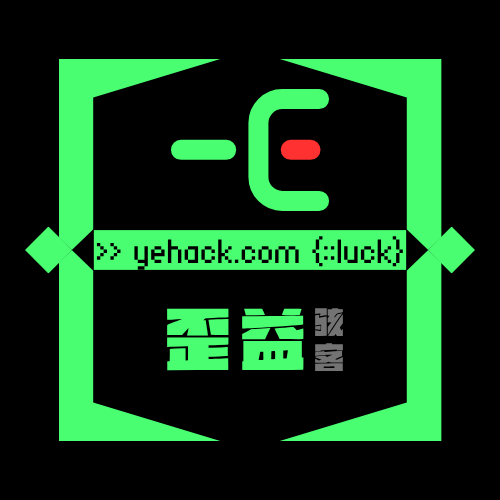

DATA / 001
JSON 整理器
校验、格式化或压缩 JSON。错误会在本地即时反馈。

YEHACKTOOLS / 共享工具集01 / WORKSPACE
DATA / 001
校验、格式化或压缩 JSON。错误会在本地即时反馈。
TEXT / 002
处理 UTF-8 文本，不经过服务器。
输出会显示在这里
COLOR / 003
选择一个颜色，查看常用格式。
142, 230, 201HSL161°, 63%, 73%02 / MANIFEST
站内工具用于学习、研究与个人效率提升。工具可能来自复刻、仿制或社区建议，请在使用前确认你拥有相应内容的权利。
在线使用
内容默认留在本地
下载使用
需完成实名确认
商业用途
不在本站授权范围
03 / NEXT ITERATION